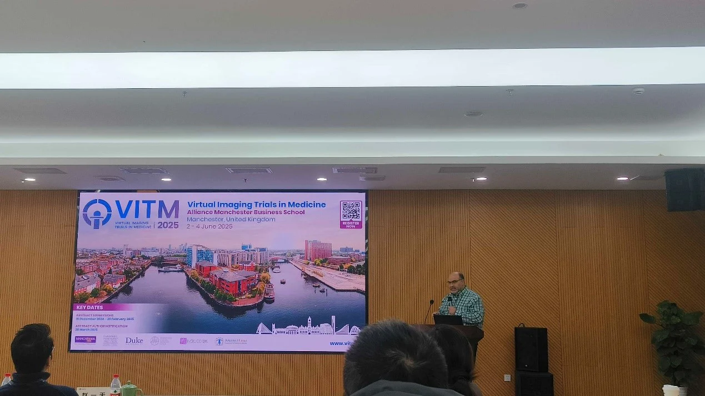
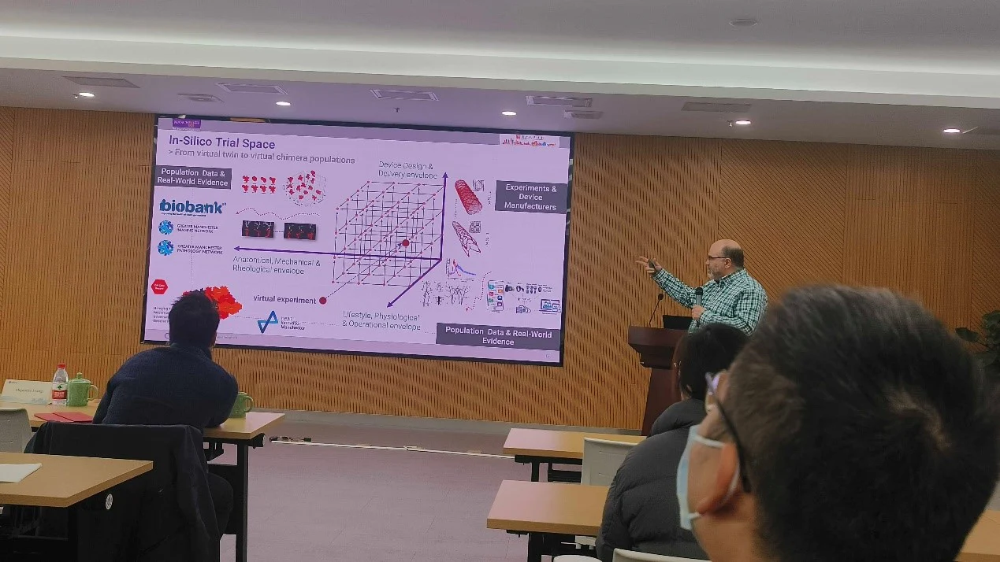
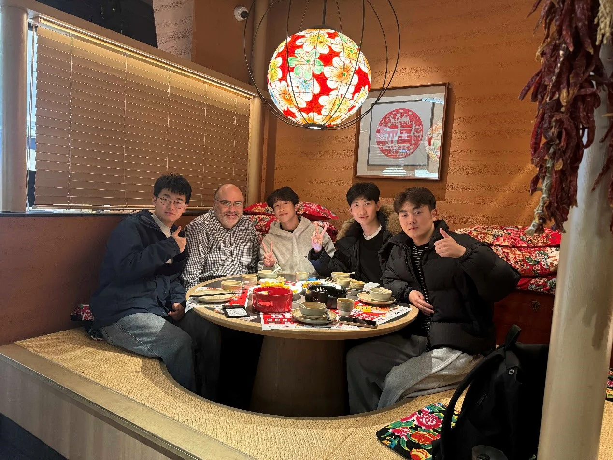
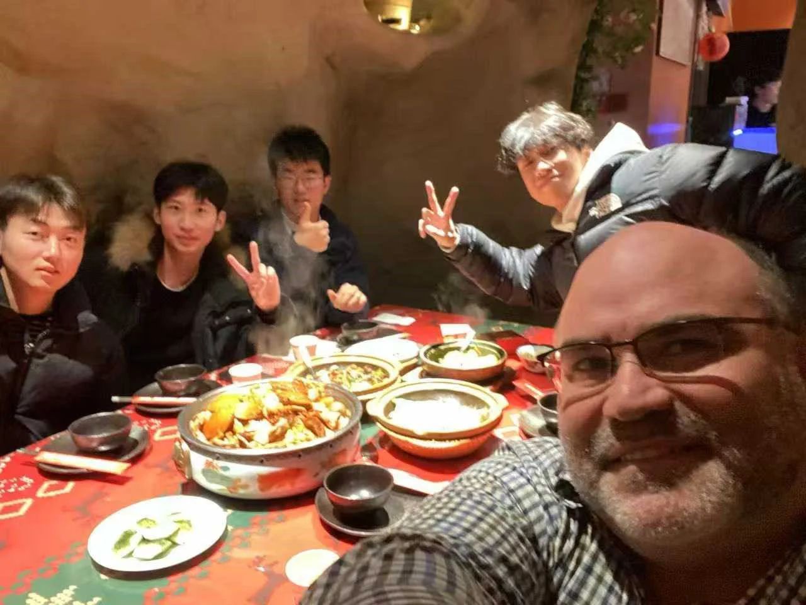

英国皇家工程院院士 Alejandro Frangi 教授来组交流
2025 年 1 月 18 日，英国皇家工程院院士 Alejandro Frangi 教授莅临课题组，开展了一场关于计算模拟试验（ISTs）在医疗器械开发与监管领域应用的学术报告会，吸引了众多科研人员与行业专家的广泛关注。

上午的会议中，Frangi 教授深入浅出地阐述了 ISTs 如何为医疗器械行业带来变革。他指出，传统临床试验面临着成本高昂、耗时漫长以及潜在安全风险等诸多局限性。而 ISTs 通过在虚拟环境中模拟设备性能，能够有效突破这些瓶颈，加速创新进程、降低研发成本，同时提升患者安全性。Frangi 教授还通过一系列生动的案例，展示了 ISTs 在应对非标签使用、设备依赖性医疗不平等以及最佳治疗分层等复杂挑战时的独特优势，强调了其在复制并扩展传统试验洞察力方面的巨大潜力。此外，他还着重强调了监管机构、产业界和患者三方合作的重要性，认为只有通过协同努力，才能推动更安全、更可持续的医疗创新。

报告结束后，课题组成员与参会人员围绕 ISTs 的技术细节、应用场景以及未来发展方向进行了热烈的交流与讨论，现场气氛活跃，学术氛围浓厚。
会议次日，课题组四名博士李宏硕、周诗佳、张明恩、胡肖扬陪同 Alejandro Frangi 教授深入宁波，沉浸式体验当地丰富多彩的中国文化。他们一同走访了宁波的历史街区，感受古建筑与传统文化的魅力；品尝了宁波汤圆、海鲜等特色美食，领略舌尖上的中国风味；还参观了当地的文化展览，进一步加深了对中国悠久历史与深厚文化底蕴的理解与认识。此次文化交流活动不仅增进了双方的友谊，也为后续的学术合作奠定了坚实的文化基础。
 
本次 Alejandro Frangi 教授的来访，不仅为课题组带来了国际前沿的学术理念与技术方法，也为推动计算模拟试验在国内医疗器械领域的应用与发展提供了宝贵的经验与启示，进一步促进了学术界与产业界的深度融合与协同创新。